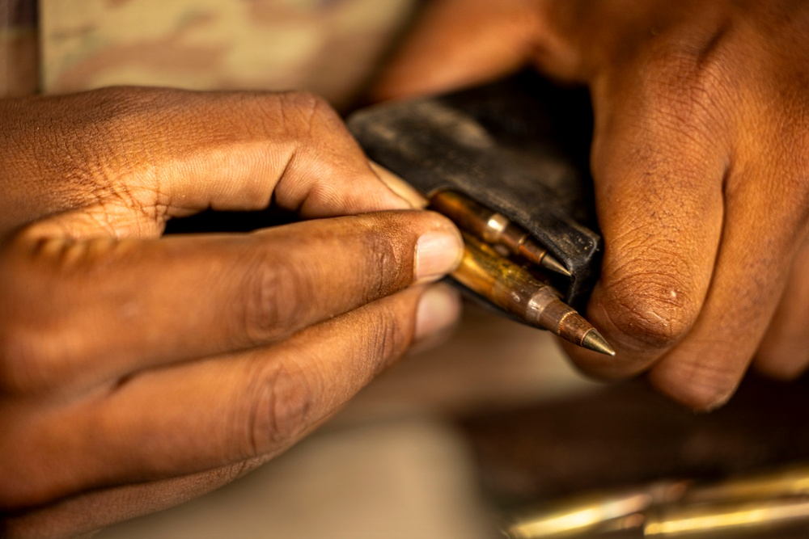

Staff Sgt. Anthony Herrera, U.S. Army · DVIDS 9995638 · Public domain · A 3rd Infantry Division soldier extracts 5.56 rounds from a magazine at Fort Stewart, Georgia, Sept. 30, 2026.
DVIDS
3rd Infantry Division soldiers qualify with the M4 at Fort Stewart
An Army still posted Tuesday shows a 3rd Infantry Division soldier extracting 5.56 rounds from a magazine on the Fort Stewart range. The photograph was taken Sept. 30 and released this afternoon. The caption says regular weapons training keeps soldiers confident, disciplined, and ready to fight. It is range work, not a deployment announcement.
DVIDS · Read source →